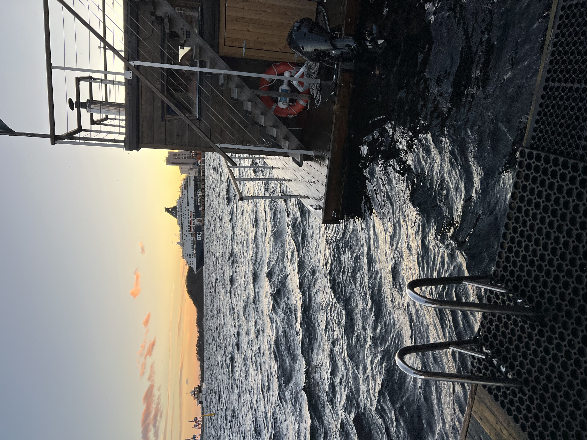
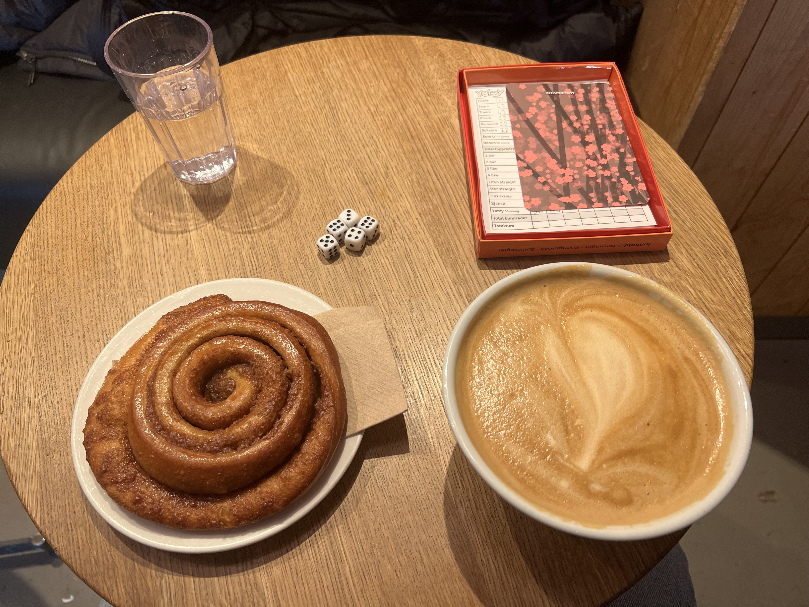
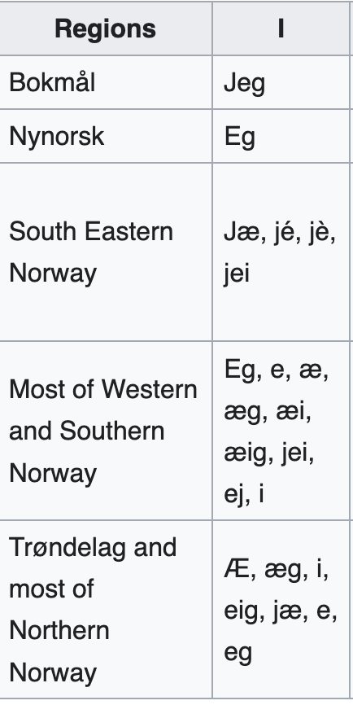
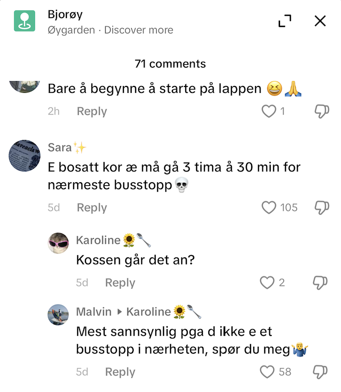
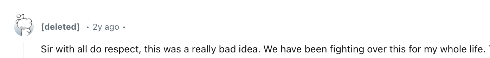
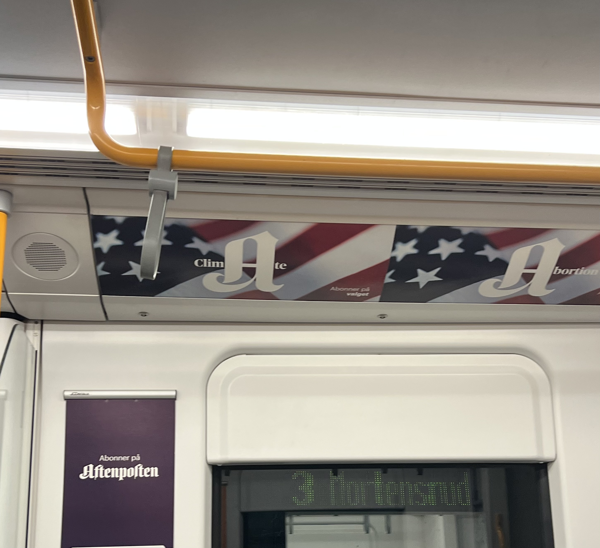

There’s one word that in my time in Norway has reigned supreme. It is the ultimate compliment, the aspiration for all things, and even a philosophy of life
depending on who you ask. The word is ‘koselig’ (pronunciation is kose - think ‘close’ without the ‘l’ - eh - lee) and if you take the Google translation
of it meaning ‘cozy’ at face value, you’re barely scratching the surface. Unlike its more literal equivalent, koselig is rarely just about physical items
or environments. A person can be koselig, an experience can be koselig, and as mentioned before, koselig can also be a frame of mind. So what does
koselig mean then? Well, to continue to hijack reddit to explain Norwegian phenomena, one person (who gives their own take on koselig in this blog)
describes the state of koselig “like an inner summer that Norwegians create for themselves to feel like it’s warm all year long no matter the
circumstances”. In my (less eloquent) telling, koselig describes a kind of intimacy, and particularly one that describes finding beauty in simplicity. In
other words, it’s something that feels comfortable and natural without a lot of effort, which is the meaning in which koselig is often applied to
feelings and friendships. I’ve been told that telling someone that their house is koselig is the nicest thing you can say in Norwegian culture, and to be
told after hanging out with someone that they had a kjempe (similar meaning to ‘very’ or ‘super’) koselig time is an unofficial barometer that you are
officially friends.
For many Norwegians, winter is the ideal climate to really embrace a koselig time. It’s much more common to take an extended vacation over the holidays here
(I’m leaving back to the US on the 19th and think I’ll be one of the only people in my office that last week), and families will often spend some of that
time in a cabin up in the mountains where the itinerary typically includes cross country skiing, spending time with family, and reading (side note, but
Norway has a massive reading culture. It’s an unofficial national tradition to read mystery books over Easter, something I’ve very ready to see for
myself in person). To ward off the early darkness, plenty of blankets and candles are a given, along with the traditional Norwegian fish and lamb dishes
that are almost exclusively eaten around Christmastime.
So, how have I been getting koselig then? Well, in line with the Norwegian reading culture, the early darkness has turned me into quite a lesehest (literal
translation reading (lese) horse (hest), but a Norwegian word for an avid reader). The public library continues to be one of my favorite spaces in the
city and save for my many trials duking it out for a table or reading spot, because as it turns out, I am not the first one to discover the place, it
remains a great place to watch the last minutes of daylight eke out over the fjord and to watch working, reading, and procrastinating Oslofolk bustling
about. My current is called Cod: A Biography of the Fish that Changed the World (you will never guess what it’s about), which I promise is significantly
more interesting than it sounds!! The first chapters have been about how learning to salt and preserve cod were a large reason Vikings were able to sail
to North America before the rest of Europe so I’ve appreciated the bits of Norwegian history I’ve gotten out of it. The cod book is quickly joining
another title I read a couple years back, The Book of Eels, on my proverbial maritime Mount Rushmore, though I’m still taking applications for the other
two spots.
In other traditional koselig practices, Cameron visited this past week and we embarked on my first Scandinavian sauna experience. Located right on the waters
of the fjord opposite the library, the sauna makes you forget in seconds your shivering through 30 degree temperatures (plus a nice sea breeze) on the
walk over. That is, until you follow through with the next essential part of the fjord experience: jumping into the 40ish degree fjord. Then, no matter
how burning hot you were feeling seconds prior, your fight or flight instincts kick in immediately upon breaking the surface of the water, and it’s a
frantic struggle getting up the ladder and back into the warm confines of your cubical wooden refuge. But still, if there’s anything to learn from that
type of homeostasis whiplash, it’s that koselig is hardly limited to warm-inducing activities. In a related freezing vein, this morning was our first
real snowstorm of the year (we’ve had very brief snows previously but this was the first one that really stuck), and to welcome in the occasion I was
able to go on a nice run along the water and welcome in the oncoming winter - another experience that while warming to the heart was cold to particularly
my fingers and toes.
|  | |
| Even one of the student groups at KRUS calls themselves "Kose Gruppa" (The Kos Group) |
Sunset from the sauna deck, infamous ladder and all |
This next week though, my discovery of what all constitutes koselig will be at least temporarily delayed, since I’m turning in the weather in the high teens
and low twenties for the significantly warmer airs of Portugal where I’ll be attending the European electronic monitoring conference as part of my
research. So, stay tuned for a non-Norway post coming from me soon, and in the meantime, I’ll be introducing my roommates to America’s own entry to the
koselig cannon: the Charlie Brown Thanksgiving and Christmas specials.
|
 |
| Scenes from my snowstorm run | A koselig time at the ever-popular coffee chain Kaffebreneriet |
Norway has weighed in FIRMLY on the Christmas-decorations-before-or-after Thanksgiving debate. Turns out it’s a lot more straightforward when there’s no
turkey to be eaten around this time of year. Jultid (Jul, Norwegian for Christmas, is pronounced like ‘yule’, and tid is Norwegian for time) has hit
the ground running in Oslo, and with it have come a host of seasonal decorations and foods that I’m encountering in every corner of the city.
First, the foods. The ultimate debate in Norway, the proverbial pineapple-on-pizza debacle (but at least for me, a foreigner, significantly more novel
and interesting to talk about) is the debate around Julebrus. Brus is Norwegian for soda, and turns out this is the one time of year Norwegians will
put down their collective Pepsi Maxes in lieu of other flavors (still not diet coke though, if only they knew). The debate centers around the two
main types of Julebrus that are sold, one a red soda and the other brown. Both sodas, regardless of color, are exceptionally sweet - probably
something I’d liken most to something cotton candy flavor in the states. The red flavor in general tends to taste slightly more berry-like, while the
brown soda has more of a vanilla taste. Complicating the matter further is that many local breweries make their own version of Julebrus too, meaning
the debate is not just one of flavor but of local pride. Having tried the main grocery store brand of each so far, I have to say I lean more in the
brown Julebus camp, if nothing else because it comes in a glass bottle instead of a plastic one which makes it just a little more fun to drink à la
Jarritos. But, to quote the reddit page I consulted about the fierce Julebrus battle, “Whatever you think, your subjective opinion is objectively
wrong!”
|  |
|  |
|  |
| Exerpt from the Julebrus chaos |
In significantly more peaceful matters, mulled wine is another popular Christmas drink, and served warm, it’s one of the cornerstones of Norwegian
Christmas markets, the first of which opened in the center of Oslo last week. Besides mulled wine, other stands at the market offer their wares of
churros, traditional Norwegian waffles, and the ever-Scandinavian pølser - Norway’s sausage-food-of-choice that straddles the line between bratwurst
and hot dog. Otherwise, stalls sell Christmas gifts such as wool sweaters and blankets, novelty meats and cheeses (whale jerky anyone?), and other
ornaments and trinkets that bring hundreds of people flocking to the scene on any given evening. Centering the spectacle is a large ferris wheel and
assorted small carnival games and rides for kids, and an ice skating rink that does not offer skates for rental, I guess because enough Norwegians
have their own to take along with them. It’s hard not to get swept up in the festivities, particularly as string lights now dot every walkway through
the center of the city, all directing you back towards the market like some kind of fluorescent runway.
 |
 |
| Walking through Oslo's Christmas festival | With fog blanketing the city |
Helping the appeal is that it is now increasingly and objectively dark outside. I know this is something I’ve continued to repeat in my blogs, but as I
write with the full naivety of someone who has for the nearly past 10 years of my life lived somewhere that is inarguably Not dark, every couple
weeks it continues to shock me just the same. The effect of darkness in my experience so far is something like the effect of a casino or movie
theater, where the reality of using the level of light in the sky to indicate what time of day it is slowly loses its grip and all times of day seem
to be really more or less the same. When it is ‘daytime’ too, the fog rolling off the fjord now coats much of the city in a murky haze. The result is
sometimes jarring. 5pm and going out to stretch your legs? Pitch black outside! 1am and coming home from the bar? It’s no different! Though I haven’t
experienced the tiring effect some people report in the increased darkness (turns out I drink a lot of caffeine both in the light and the dark!), it
has required me to try to concretely time block my day out more to continue following a normal schedule. For the time being though, it’s something
that I’m particularly enjoying. In the fleeting moments where the sun does appear too, I love the way it pulls each person outside to bask in all the
warmth they can get, and for a brief moment in the middle of the day, the city is together in enjoying the beauty of the oncoming winter.
 |
|
| Getting used to frosty mornings | What a beautiful sunset! It is 3:30pm |
More will come soon on Norway’s Christmas traditions, because there’s a lot to cover. For one, Norwegian children get to see Santa at their house each
year?? What have American kids been doing wrong this entire time? This weekend though I’ll be playing host once again in Oslo, and the dusk facing me
outside the public library is calling me to get outside again while I still can. Vi snakkes!
The most patriotic place I’ve been in the last year was in an auditorium tucked along the back of the University of Oslo’s student union building,
Chateau Neuf. Named for the student union’s mascot, a pig (neuf is the Norwegian onomatopoeia equivalent to oink, not a random use of French), the
building on this Tuesday night was decked in red, white, and blue. Admittedly these are also the colors of the Norwegian flag, but the Stars and
Stripes themselves were found everywhere: on flags, streamers, banners, and on advertisements promoting the Norwegian TV coverage of the results.
Yes, in the same building that proudly displays the writings of North Korea founder Kim Il Sung (student culture had a communist turn in the 70s and
80s I’ve been told), I was one of around a thousand students to attend a US election watch party.
Many Norwegians are closely attuned to US politics in ways that are sometimes not top of mind for Americans living in the states. For one, the actions of
NATO are of primary concern here. As someone who is fairly politically engaged, I know the basics of NATO: that it was founded as a military alliance
with the US and Western Europe following the end of World War II, and that its existence was used as a method of military pressure on the Soviet
Union through the Cold War. And I’m aware that it’s something that still exists, but it’s hardly something that dominates many political
conversations in the states, even in the context of foreign policy. However, for Norway, a member of NATO, the direction of the organization is one
of the largest concerns for Norwegians for national security and global politics. As it currently stands, the US has a significant military and
weapons presence in northern Norway (close to the Russian border), and just this year, an agreement was made that gives the US exclusive authority
over twelve military areas in the country, including the power to prosecute Norwegian citizens under American law in those areas. This setup
is not highly controversial, but in a country that otherwise is not a member of the EU, it means that Norwegian foreign policy is to a large extent shaped by
American leadership. For some people I’ve talked to, this reliance creates a unique type of election anxiety: one where not only the result is
unknown, but where you also have no say in the process.
The election party itself, besides being an excuse for a lot of students to drink on a Tuesday, included a series of speakers who gave their perspective
on the state of American politics. First, a professor of American Studies (a major that’s offered in most universities here), called in from Austin
where she was currently researching to give a brief overview of each of the swing states. She explained some of the main developments of the
election, including VP picks and general trends in voting (i.e. gender, age gaps in voting behavior). The call ended with a triumphant prediction
that Kamala Harris would win, Ted Cruz would lose his Senate seat, and that possibly even Texas itself could turn blue on a federal level in the near
future. The second speaker, Thomas Seltzer, was born in Wisconsin before moving to Norway with his family at age six, where he now hosts a popular
Norwegian TV show called UXA. In it, he travels to small towns in America to ask people about the issues they face. His talk reflected that
perspective; he discussed how you could have voters who would support both Bernie Sanders and Donald Trump, and the general political disillusionment
and struggles felt by many working class Americans that precipitated Trump’s political rise. While particularly the Texas predictions have aged
poorly, it does hint at the gulf that exists sometimes between Norwegian and American politics. As my roommate Sebastian reminded me as we passed a
meeting room where the student group of the Høyre (right) Norwegian party was meeting, almost anyone in that room would’ve supported Kamala for
president.
|  | |
| Couldn't escape the election ads here either - even on the subway | The crowd filling in pre-speakers at the watch party |
In the immediate fallout of the election, many of my coworkers and others I’ve chatted with have wanted to ask about the results, but fortunately I’ve
been spared the having-to-answer-for-your-country accusations that the Fulbright office had warned us were possible when we first arrived in the
country. There is some incredulity about Trump’s win, seen with the same sort of perspective the American studies professor had, but on a micro scale
Norwegian politics are trending the same direction. With the asterisk that Norwegian politics are much further left than the US’, Norway’s current
center-left parliament is expected to fall to a coalition made up of the Høyre and the further right Progress parties in next year’s election. In some
ways, this makes the results of the American election less staggering. America has joined many other countries, including the UK and France this year,
in seeing the political party that presided over post-COVID inflation to fall in dramatic fashion. Though the results are disheartening, to say the
least, it does give me some solace to see the results as one domino in a larger global phenomenon, and less of an indictment on American morality. In
the meantime too, I remain hopeful in imagining a political future outside of what the Democratic Party had deemed politically feasible - since that
certainly wasn’t the case.
On an unrelated note, I’ve picked up a few Norwegian sayings from my roommates and have been trying to fit them into everyday conversation. I’ll leave
the sayings in Norwegian and their literal translations but best of luck piecing together what they might mean :)
Ta det helt piano (Take it completely piano)
Er det ugler i mosen? (Are there owls in the moss?)